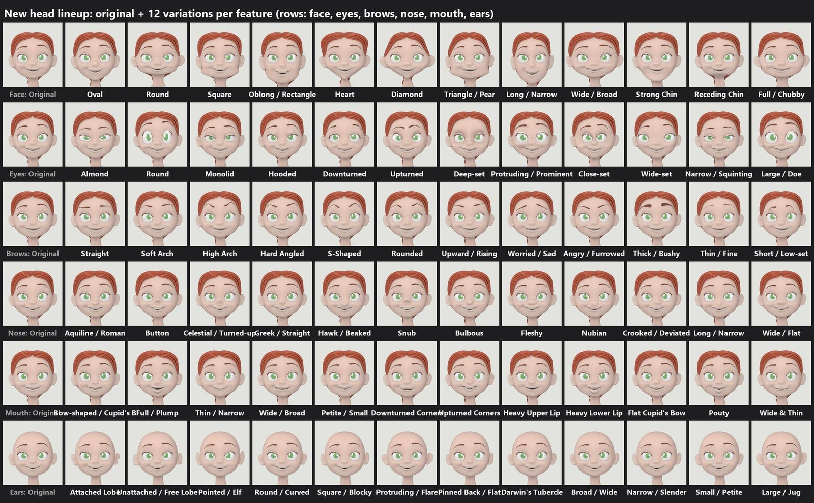

Houdini · VEX · Python · Karma XPU
Procedural Head
One stylized head, 72 face-feature styles and 50 mixed faces — a parameter-driven deformer reshapes face shape, eyes, brows, nose, mouth and ears in place, rendered as fixed-camera mugshots in Karma XPU.
View full breakdown →